MOLINILLOS
2018
El molinillo es una artesanía que ha permanecido sin cambios desde que en 1700, nació mestizo, es decir de la mezcla entre la cultura mexicana y española durante la colonia.
Primer exploración de serie de esculturas basadas en la idea del molinillo como objeto de arte. El objetivo no es solo explorar la técnica, materiales y forma del molinillo, además, explorar la frontera entre el arte y la artesanía en México.
Proyecto en exhibición permanente. Colección privada.


Molinillo 1
Magnolia, aceite

Molinillo 2
Magnolia

Molinillo 3
Magnolia

Molinillo 4
Magnolia

Molinillo 5
Magnolia
Molinillo 6
Magnolia

Molinillo 7
Magnolia

Molinillo 8
Magnolia
Molinillo 9
Magnolia
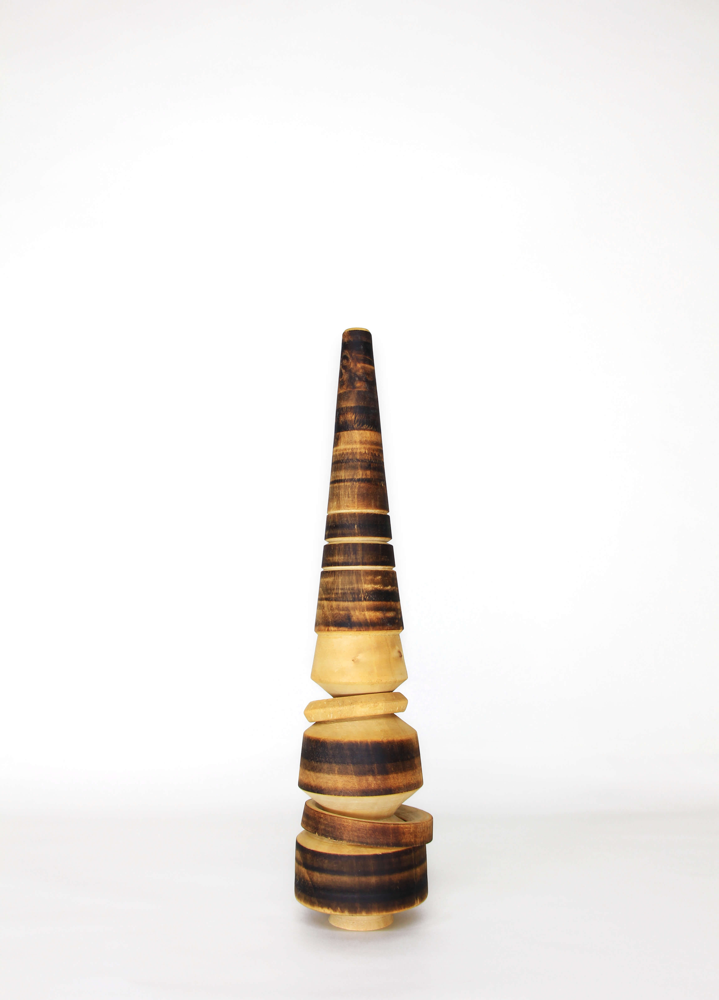
Molinillo 10
Magnolia, aceite

Molinillo 11
Magnolia

Molinillo 12
Roble
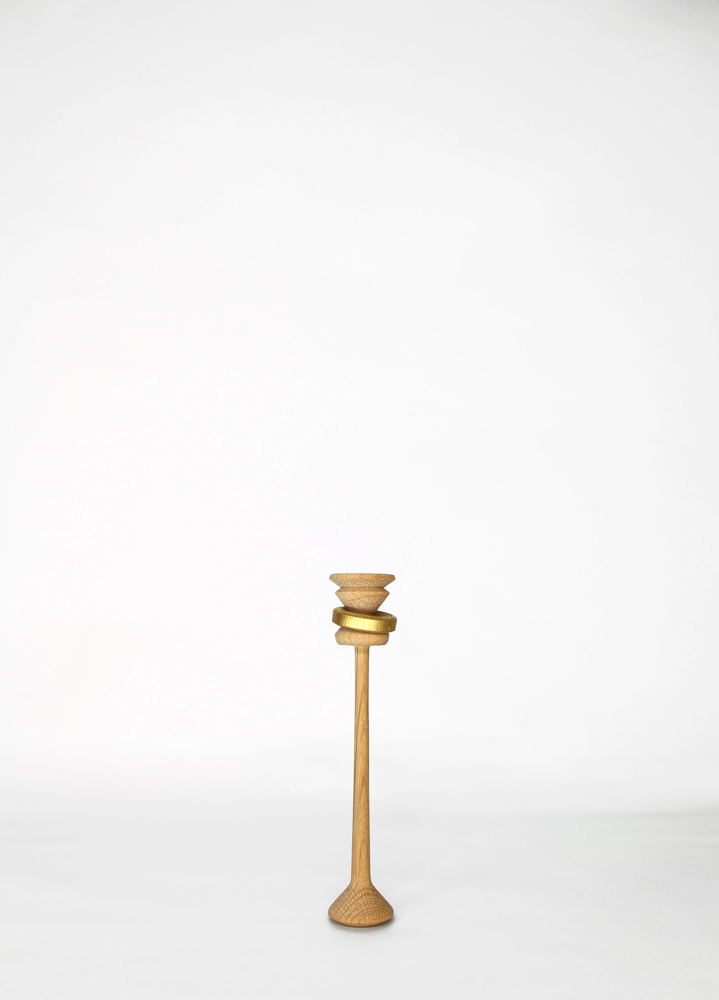
Molinillo 13
Roble, chapa de latón
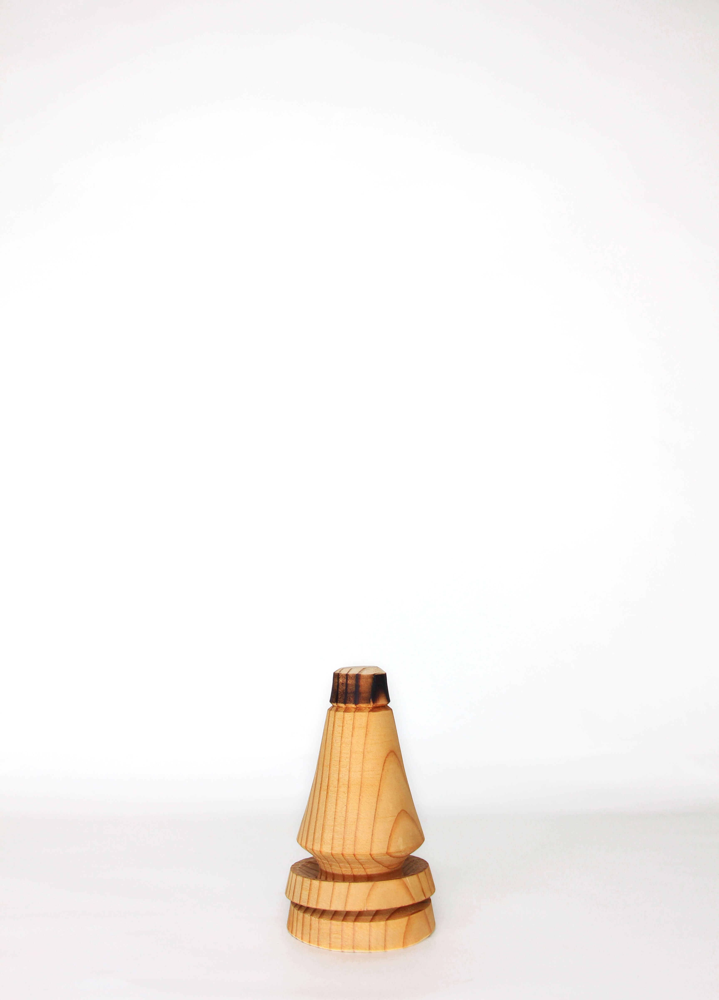
Molinillo 14
Alerce

Molinillo 15
Magnolia, laca Japonesa
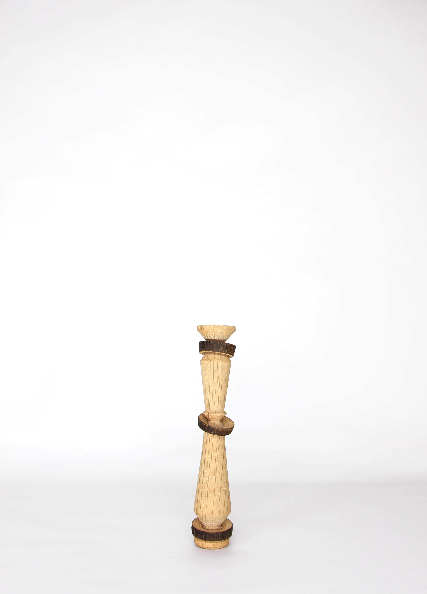
Molinillo 16
Roble

Molinillo 17
Álamo

Molinillo 18
Roble

Molinillo 19
Roble

Molinillo 20
Magnolia, chapa de latón

Molinillo 21
- -
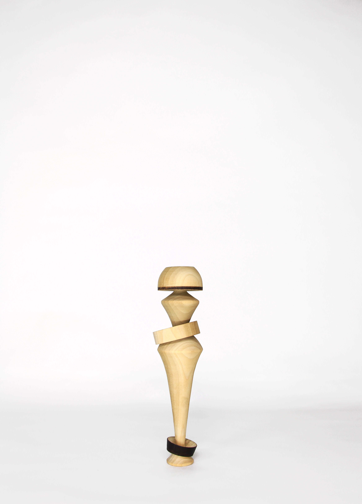
Molinillo 22
Álamo

Molinillo 23
Olmo Japonés
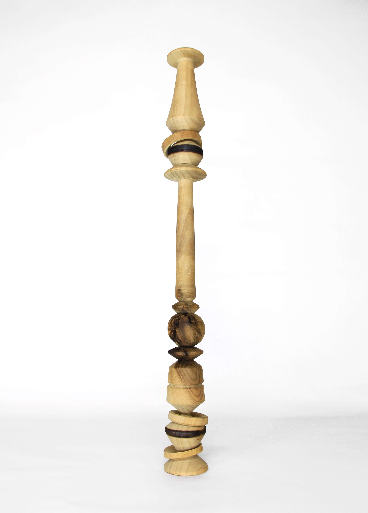
Molinillo 24
Álamo
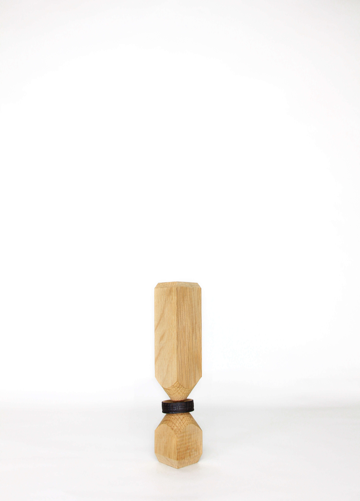
Molinillo 25
Roble
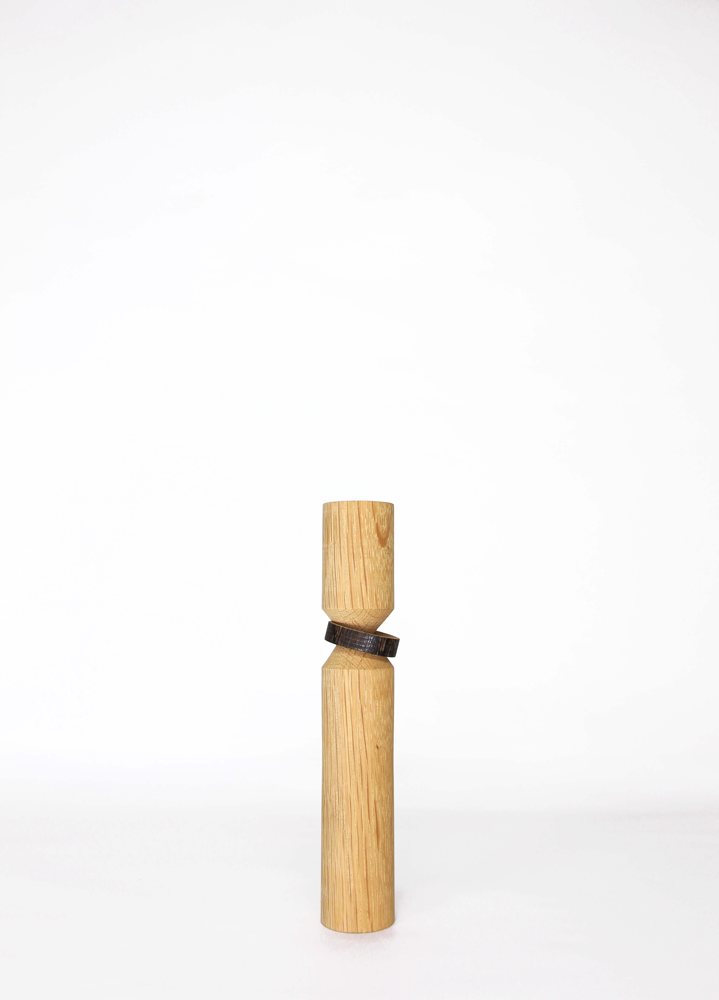
Molinillo 26
Roble
Molinillo 27
Olmo Japonés, chapa de oro

Molinillo 28
Álamo

Molinillo 29
- -

Molinillo 30
Nogal
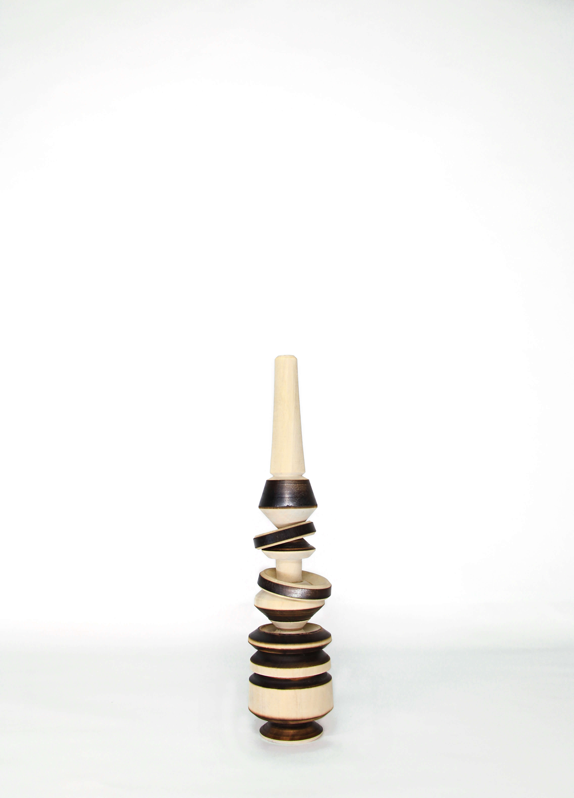
Molinillo 31
Magnolia
Molinillo 32
Burdock

Molinillo 33
Burdock
Molinillo 34
Burdock, chapa de oro

Molinillo 35
Nogal

Molinillo 36
Nogal

Molinillo 37
Roble
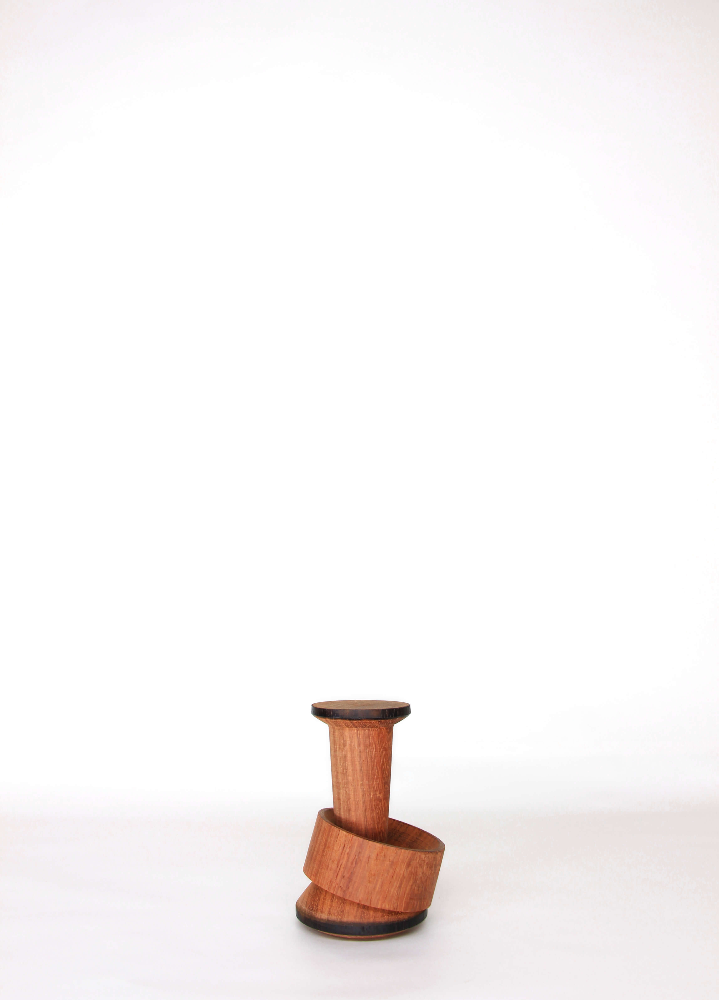
Molinillo 38
Burdock
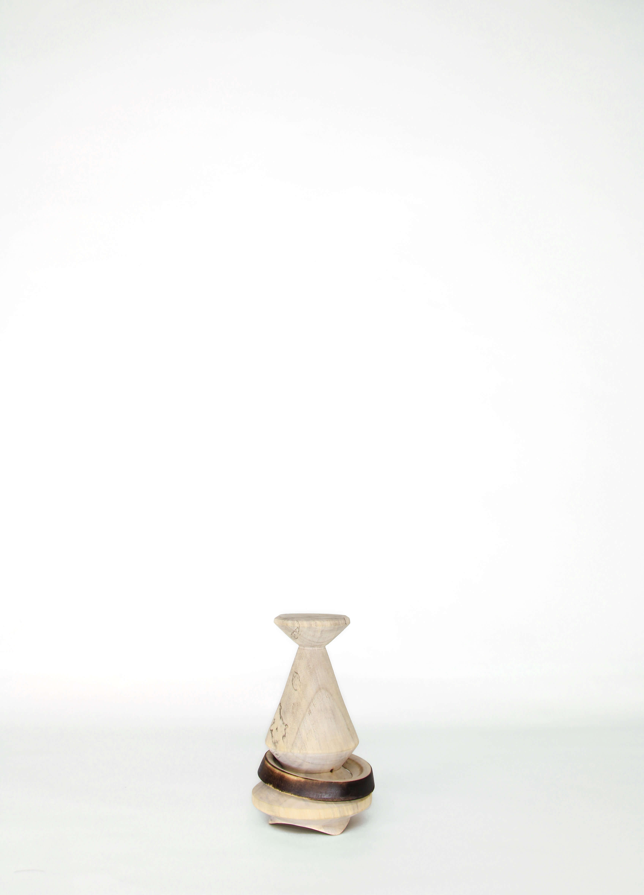
Molinillo 39
Magnolia

Molinillo 40
Ciprés Japonés

Molinillo 41
- -

Molinillo 42
Álamo

Molinillo 43
Nogal

Molinillo 44
Olmo Japonés
Molinillo 45
Roble
Molinillo 46
Álamo
Molinillo 47
- -

Molinillo 48
Álamo

Molinillo 49
- -
Molinillo 50
Ciprés Japonés, chapa de oro
Molinillo 51
Álamo, chapa de oro

Molinillo 52
Burdock, chapa de oro
Molinillo 53
Nogal
Molinillo 54
Olmo Japonés

Molinillo 55
- -
Molinillo 56
Olmo Japonés

Molinillo 57
- -

Molinillo 58
- -

Molinillo 59
Ciprés Japonés, chapa de oro

Molinillo 60
Nogal
Molinillo 61
Nogal
Molinillo 62
Burdock
Molinillo 63
Fresno blanco
Molinillo 64
Ciprés Japonés

Molinillo 65
Ciprés Japonés
Molinillo 66
Ciprés Japonés, chapa de oro
Molinillo 67
Ciprés Japonés
Molinillo 68
Álamo
Molinillo 69
Burdock
Molinillo 70
Haya

Molinillo 71
Haya

Molinillo 72
Álamo

Molinillo 73
Álamo

Molinillo 74
- -
Molinillo 75
- -

Molinillo 76
Olmo Japonés

Molinillo 77
Olmo Japonés

Molinillo 78
Haya
Molinillo 79
Fresno blanco
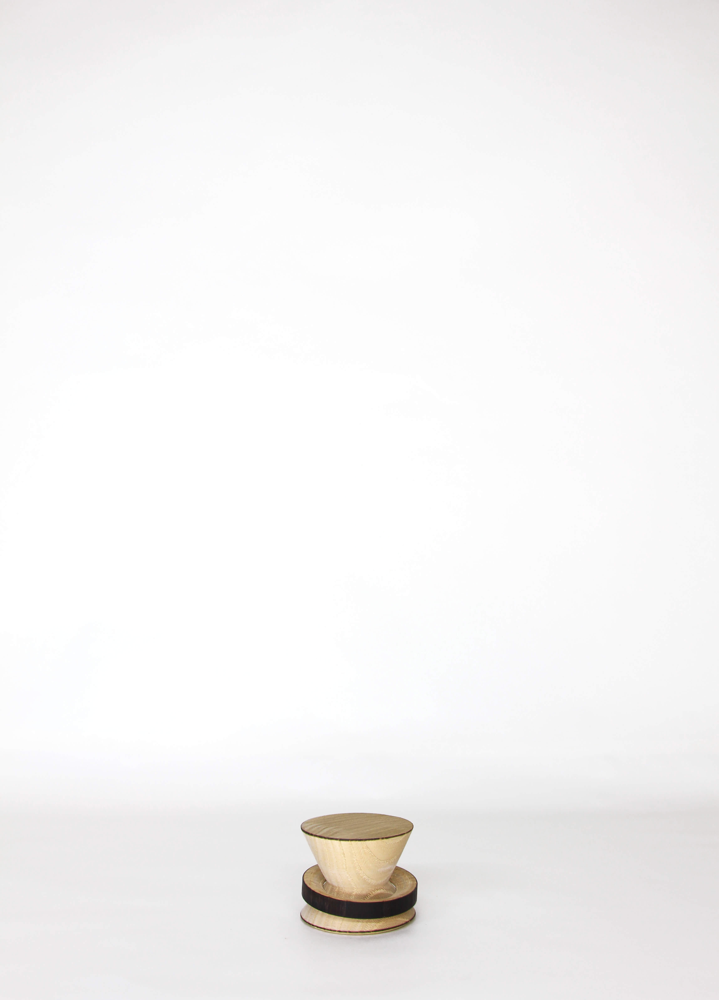
Molinillo 80
Fresno blanco

Molinillo 81
Fresno blanco

Molinillo 82
Haya
Molinillo 83
Haya
Molinillo 84
Álamo
Molinillo 85
Álamo

Molinillo 86
Álamo

Molinillo 87
Fresno blanco
Molinillo 88
Olmo Japonés

Molinillo 89
Fresno blanco